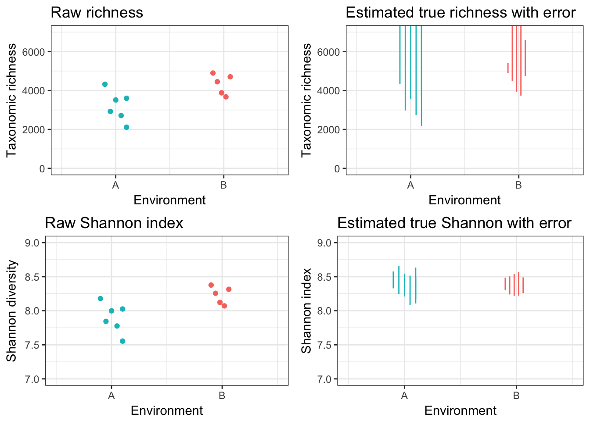

An unfinished tutorial to demonstrate shannon_better and other alpha diversity estimates that adjust for missing taxa!
TODO: Finish this!
Let’s start by writing some functions to invent fake communities. This is so we can validate the idea on fake data.
library(breakaway)
library(ggplot2)
library(gridExtra)
library(dplyr)##
## Attaching package: 'dplyr'## The following object is masked from 'package:gridExtra':
##
## combine## The following objects are masked from 'package:stats':
##
## filter, lag## The following objects are masked from 'package:base':
##
## intersect, setdiff, setequal, unionlibrary(magrittr)
library(grid)
library(lattice)
# create a total community
make_community2 <- function(CC, alpha_parameter = 1, beta_parameter = 2) {
relative_proportions <- rbeta(CC, alpha_parameter, beta_parameter) # this is just a good way to get relative abundances
raw_abundances <- relative_proportions/sum(relative_proportions)
output <- list()
output$proportions <- raw_abundances
output
}
# let's simulate some rarefaction curves
subsample_community <- function(population, n) {
output <- list()
who <- sample(population$names, n, replace = F)
community <- c(as.matrix(table(who)))
abundances <- community/sum(community)
output$names <- who
output$proportions <- abundances
output
}
draw_rarefaction <- function(population, pts = NA, replicates = 5, ecosystem = NA) {
rarefaction_table <- data.frame()
if (all(is.na(pts))) pts <- c(round(seq(from = 5, to = length(population$names)/100, length = 100)),
round(seq(from = length(population$names)/100, to = length(population$names)/10, length = 100)),
round(seq(from = length(population$names)/10, to = length(population$names)/4, length = 100)),
round(seq(from = length(population$names)/4, to = length(population$names), length = 10)))
who <- replicate(replicates, sample(population$names, length(population$names), replace = F))
for (i in pts) {
subsample_diversity <- rep(NA, replicates)
subsample_shannon <- rep(NA, replicates)
for (j in 1:replicates) {
subsample <- who[1:i, j]
subsample_diversity[j] <- length(unique(subsample))
community <- c(as.matrix(table(subsample)))
proportions <- community/sum(community)
subsample_shannon[j] <- breakaway::shannon(proportions)
}
rarefaction_table %<>% rbind(data.frame("reads" = i,
"richness" = min(subsample_diversity), "richness_max" = max(subsample_diversity),
"shannon" = min(subsample_shannon), "shannon_max" = max(subsample_shannon),
"ecosystem" = ecosystem, "type" = "rcurve"))
}
rarefaction_table
}
get_point <- function(ecosystem, read, label) {
read <- round(read)
my_population <- get(paste("population", ecosystem, sep=""))
ecosystem_name <- paste("ecosystem", ecosystem, sep="")
subsample <- sample(x = c(1:length(my_population$proportions)), size = read, prob = my_population$proportions, replace = T)
point <- data.frame("reads" = read,
"richness" = length(unique(subsample)), "richness_max" = NA,
"shannon" = breakaway::shannon(c(as.matrix(table(subsample)))/sum(c(as.matrix(table(subsample))))),
"shannon_max" = NA,
"ecosystem" = ecosystem_name, "type" = "observation")
subsample1 <- list()
subsample1$names <- subsample
subsample1$proportions <- c(as.matrix(table(subsample)))/sum(c(as.matrix(table(subsample))))
rarefied_sample <- draw_rarefaction(subsample1, replicates = 1, pts = seq(from = 1, to = read, length = 100),
ecosystem = ecosystem_name)
rarefied_sample$type <- paste("rarefied_sample", label, sep="")
richness_estimate <- subsample %>% make_frequency_count_table %>% breakaway(print = F, answers = T, plot = F) %$% ci
shannon_estimate <- subsample %>% make_frequency_count_table %>% shannon_better
names(shannon_estimate)[3:4] <- c("shannon", "shannon_max")
print(shannon_estimate)
estimate <- data.frame("reads" = read,
"richness" = richness_estimate[1], "richness_max" = richness_estimate[2],
"shannon" = shannon_estimate[3], "shannon_max" = shannon_estimate[4],
"ecosystem" = ecosystem_name, "type" = paste("estimate", label, sep=""))
rbind(point, rarefied_sample, estimate)
}
get_truth <- function(ecosystem_number) {
ecosystem <- paste("population", ecosystem_number, sep = "")
population <- get(ecosystem)
data.frame("reads" = 0, "richness" = length(population$proportions), "richness_max" = NA,
"shannon" = breakaway::shannon(population$proportions), "shannon_max" = NA,
"ecosystem" = paste("ecosystem", ecosystem_number, sep = ""), "type" = "truth")
}Now let’s actually create some communities, and draw some pretend samples from them.
set.seed(170918)
Ca = 6000
Cb = 5000
aa = 0.5
ab = aa
ba = 3
bb = 1
# rarefaction curves
population1 <- make_community2(Ca, alpha_parameter = aa, beta_parameter = ab)
population2 <- make_community2(Cb, alpha_parameter = ba, beta_parameter = bb)
# observations and truth
truth <- rbind(get_truth(1), get_truth(2))
observations <- rbind(get_point(2, 25000, 1),
get_point(2, 12000, 2),
get_point(2, 8000, 3),
get_point(2, 7000, 4),
get_point(2, 16000, 5),
get_point(1, 8000, 1),
get_point(1, 14000, 2),
get_point(1, 5000, 3),
get_point(1, 7500, 4),
get_point(1, 4500, 5),
get_point(1, 3000, 6))## Warning in shannon_better(.): Confidence intervals and standard errors are
## approximate!## index estimate shannon shannon_max upper
## 1 shannon 8.394009 0.04684391 8.302197 8.485822## Warning in shannon_better(.): Confidence intervals and standard errors are
## approximate!## index estimate shannon shannon_max upper
## 1 shannon 8.371503 0.06743262 8.239337 8.503668## Warning in shannon_better(.): Confidence intervals and standard errors are
## approximate!## index estimate shannon shannon_max upper
## 1 shannon 8.380738 0.08267669 8.218695 8.542782## Warning in shannon_better(.): Confidence intervals and standard errors are
## approximate!## index estimate shannon shannon_max upper
## 1 shannon 8.396488 0.0885631 8.222908 8.570069## Warning in shannon_better(.): Confidence intervals and standard errors are
## approximate!## index estimate shannon shannon_max upper
## 1 shannon 8.374706 0.05842253 8.2602 8.489212## Warning in shannon_better(.): Confidence intervals and standard errors are
## approximate!## index estimate shannon shannon_max upper
## 1 shannon 8.334576 0.082179 8.173508 8.495644## Warning in shannon_better(.): Confidence intervals and standard errors are
## approximate!## index estimate shannon shannon_max upper
## 1 shannon 8.452712 0.06313501 8.328969 8.576454## Warning in shannon_better(.): Confidence intervals and standard errors are
## approximate!## index estimate shannon shannon_max upper
## 1 shannon 8.451211 0.1055248 8.244386 8.658036## Warning in shannon_better(.): Confidence intervals and standard errors are
## approximate!## index estimate shannon shannon_max upper
## 1 shannon 8.376672 0.08535505 8.20938 8.543965## Warning in shannon_better(.): Confidence intervals and standard errors are
## approximate!## index estimate shannon shannon_max upper
## 1 shannon 8.301616 0.1090084 8.087963 8.515269## Warning in shannon_better(.): Confidence intervals and standard errors are
## approximate!## index estimate shannon shannon_max upper
## 1 shannon 8.370372 0.1346813 8.106401 8.634342rarefaction_level <- observations %>% filter(type == "observation") %>% select(reads) %>% min
rarefaction_table <- rbind(observations, truth)
rarefaction_table %>% select(ecosystem) %>% unlist %>% substring(10, 11) %>% as.numeric -> rarefaction_table$ecosystem_number
plot_base <- ggplot(data = rarefaction_table, aes(col = ecosystem)) +
theme_bw()
plot_5_a <- plot_base +
labs(x="No. reads", y="Taxonomic richness",col = "") +
coord_cartesian(xlim = c(0, 26000), ylim=c(0, 7000)) +
geom_point(data = rarefaction_table %>% filter(type == "observation"),
aes(x=reads, y=richness, col = ecosystem))+
theme(legend.position = c(0.7, 0.25), legend.text=element_text(size=7)) +
scale_color_discrete(name="",
breaks=c("ecosystem1", "ecosystem2"),
labels=c("Environment A", "Environment B")) +
guides(fill=FALSE)
plot_5_b <- plot_base +
labs(x="No. reads", y="Shannon diversity",col = "") +
coord_cartesian(xlim=c(0, 26000), ylim=c(7, 9)) +
geom_point(data = rarefaction_table %>% filter(type == "observation"),
aes(x=reads, y=shannon, col = ecosystem))+
theme(legend.position = c(0.7, 0.3), legend.text=element_text(size=7)) +
scale_color_discrete(name="",
breaks=c("ecosystem1", "ecosystem2"),
labels=c("Environment A", "Environment B")) +
guides(fill=FALSE)
plot_6_a <- plot_5_a +
geom_ribbon(data = rarefaction_table %>% filter(type == "rcurve"),
aes(x=reads, ymin=richness, ymax=richness_max, col = ecosystem, fill = ecosystem), alpha = 0, linetype = 0) +
geom_point(data = rarefaction_table %>% filter(type == "observation"),
aes(x=reads, y=richness, col = ecosystem))+
geom_line(data = rarefaction_table %>% filter(type == "rarefied_sample1"),
aes(x=reads, y=richness, col = ecosystem)) +
ggtitle("Rarefaction curve") +
geom_line(data = rarefaction_table %>% filter(type == "rarefied_sample2"),
aes(x=reads, y=richness, col = ecosystem))
plot_6_d <- plot_5_b +
geom_ribbon(data = rarefaction_table %>% filter(type == "rcurve"),
aes(x=reads, ymin=shannon, ymax=shannon_max, col = ecosystem, fill = ecosystem), alpha = 0, linetype = 0) +
geom_point(data = rarefaction_table %>% filter(type == "observation"),
aes(x=reads, y=shannon, col = ecosystem))+
geom_line(data = rarefaction_table %>% filter(type == "rarefied_sample1"),
aes(x=reads, y=shannon, col = ecosystem)) +
geom_line(data = rarefaction_table %>% filter(type == "rarefied_sample2"),
aes(x=reads, y=shannon, col = ecosystem)) +
ggtitle("Rarefaction curve")
plot_7a_left <- plot_6_a + geom_hline(data = rarefaction_table %>% filter(type == "truth"),
aes(yintercept=richness, col = ecosystem), lty = 2)
plot_7b_left <- plot_6_d + geom_hline(data = rarefaction_table %>% filter(type == "truth"),
aes(yintercept=shannon, col = ecosystem), lty = 2)
plot_7_a <- plot_base +
scale_x_continuous(name="Environment", breaks=c(1,2), labels=c("A", "B"), limits = c(0.5, 2.5)) +
geom_point(data = rarefaction_table %>% filter(type == "observation"),
aes(x=ecosystem_number + c(seq(-0.1, 0.1, length.out = 6),
seq(-0.1, 0.1, length.out = 5)), y=richness, col = ecosystem), alpha = 0.1) +
geom_linerange(data = rarefaction_table %>% filter(substr(type, 1, 8) == "estimate"),
aes(x = ecosystem_number + c(seq(-0.1, 0.1, length.out = 6),
seq(-0.1, 0.1, length.out = 5)), ymin=richness, ymax = richness_max), lty = 1) +
geom_hline(data = rarefaction_table %>% filter(type == "truth"),
aes(yintercept=richness, col = ecosystem), lty = 2) +
labs(y="Taxonomic richness",col = "") +
theme(legend.position="none") +
ggtitle("Estimated true richness with error") +
coord_cartesian(ylim=c(0, 7000))
plot_7_b <- plot_base +
scale_x_continuous(name="Environment", breaks=c(1,2), labels=c("A", "B"), limits = c(0.5, 2.5)) +
geom_point(data = rarefaction_table %>% filter(type == "observation"),
aes(x=ecosystem_number + c(seq(-0.1, 0.1, length.out = 6),
seq(-0.1, 0.1, length.out = 5)), y=shannon, col = ecosystem), alpha = 0.1) +
geom_linerange(data = rarefaction_table %>% filter(substr(type, 1, 8) == "estimate"),
aes(x = ecosystem_number + c(seq(-0.1, 0.1, length.out = 6),
seq(-0.1, 0.1, length.out = 5)), ymin=shannon, ymax = shannon_max), lty = 1) +
geom_hline(data = rarefaction_table %>% filter(type == "truth"),
aes(yintercept=shannon, col = ecosystem), lty = 2) +
labs(y="Shannon index",col = "") +
theme(legend.position="none") +
ggtitle("Estimated true Shannon with error") +
coord_cartesian(ylim=c(7, 9))
plot_14_a <- plot_base +
scale_x_continuous(name="Environment", breaks=c(1,2), labels=c("A", "B"), limits = c(0.5, 2.5)) +
geom_linerange(data = rarefaction_table %>% filter(substr(type, 1, 8) == "estimate"),
aes(x = ecosystem_number + c(seq(-0.1, 0.1, length.out = 6),
seq(-0.1, 0.1, length.out = 5)), ymin=richness, ymax = richness_max), lty = 1) +
labs(y="Taxonomic richness",col = "") +
theme(legend.position="none") +
ggtitle("Estimated true richness with error") +
coord_cartesian(ylim=c(0, 7000))
plot_14_b <- plot_base +
scale_x_continuous(name="Environment", breaks=c(1,2), labels=c("A", "B"), limits = c(0.5, 2.5)) +
geom_linerange(data = rarefaction_table %>% filter(substr(type, 1, 8) == "estimate"),
aes(x = ecosystem_number + c(seq(-0.1, 0.1, length.out = 6),
seq(-0.1, 0.1, length.out = 5)), ymin=shannon, ymax = shannon_max), lty = 1) +
labs(y="Shannon index",col = "") +
theme(legend.position="none") +
ggtitle("Estimated true Shannon with error") +
coord_cartesian(ylim=c(7, 9))
plot_6_b <- plot_base +
labs(y="Taxonomic richness",col = "") +
coord_cartesian(ylim=c(0, 7000)) +
geom_point(data = rarefaction_table %>% filter(type == "observation"),
aes(x=ecosystem_number+ c(seq(-0.1, 0.1, length.out = 6),
seq(-0.1, 0.1, length.out = 5)), y=richness, col = ecosystem)) +
# geom_hline(data = rarefaction_table %>% filter(type == "truth"),
# aes(yintercept=richness, col = ecosystem), lty = 2) +
ggtitle("Raw richness") +
scale_x_continuous(name="Environment", breaks=c(1,2), labels=c("A", "B"), limits = c(0.5, 2.5)) +
theme(legend.position="none")
plot_6_e <- plot_base +
labs(y="Shannon diversity",col = "") +
scale_x_continuous(name="Environment", breaks=c(1,2), labels=c("A", "B"), limits = c(0.5, 2.5)) +
geom_point(data = rarefaction_table %>% filter(type == "observation"),
aes(x=ecosystem_number+ c(seq(-0.1, 0.1, length.out = 6),
seq(-0.1, 0.1, length.out = 5)), y=shannon, col = ecosystem)) +
# geom_hline(data = rarefaction_table %>% filter(type == "truth"),
# aes(yintercept=shannon, col = ecosystem), lty = 2) +
theme(legend.position="none") +
ggtitle("Raw Shannon index") +
coord_cartesian(ylim=c(7, 9))
grid.arrange(grobs = list(plot_6_b, plot_6_e, plot_14_a, plot_14_b),
layout_matrix = matrix(c(1, 2, 3, 4), nrow = 2))